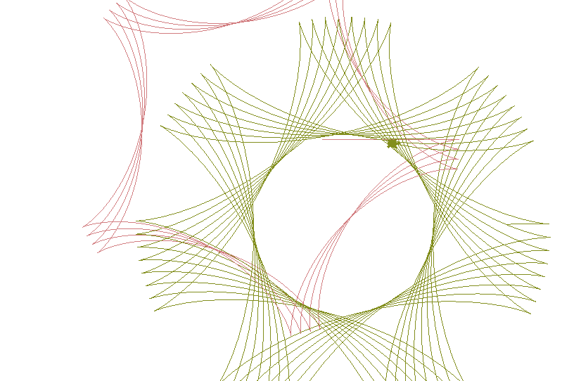

Chapter 2: Draw Spiro using Turtle Graphics#
Adapted from: “Python Playground: Geeky Projects for the Curious Programmer” by Mahesh Venkitachalam (No Starch Press)
This program demonstrates drawing a spirograph using turtle graphics. This is very similar to using the LOGO language for years gone by.
In file spiro.py#
import sys, random, argparse
import numpy as np
import math
import turtle
import random
from PIL import Image
from datetime import datetime
#from fractions import gcd
# a class that draws a Spirograph
class Spiro:
# constructor
def __init__(self, xc, yc, col, R, r, l):
# create the turtle object
self.t = turtle.Turtle()
# set the cursor shape
self.t.shape('turtle')
# set the step in degrees
self.step = 5
# set the drawing complete flag
self.drawingComplete = False
# set the parameters
self.setparams(xc, yc, col, R, r, l)
# initialize the drawing
self.restart()
# set the parameters
def setparams(self, xc, yc, col, R, r, l):
# The spirograph parameters
self.xc = xc
self.yc = yc
self.R = int(R)
self.r = int(r)
self.l = l
self.col = col
# Reduce r/R to its smallest form by dividing with the GCD
gcdVal = math.gcd(self.r, self.R)
self.nRot = self.r // gcdVal
# get ratio of radii
self.k = r / float(R)
# set the color
self.t.color(*col)
# store the current angle
self.a = 0
# restart the drawing
def restart(self):
# set the flag
self.drawingComplete = False
# show the turtle
self.t.showturtle()
# go to the first point
self.t.up()
R, k, l = self.R, self.k, self.l
a = 0.0
x = R*((1-k)*math.cos(a) + l*k*math.cos((1-k)*a/k))
y = R*((1-k)*math.sin(a) + l*k*math.sin((1-k)*a/k))
self.t.setpos(self.xc + x, self.yc + y)
self.t.down()
# draw the whole thing
def draw(self):
# draw the rest of the points
R, k, l = self.R, self.k, self.l
for i in range(0, 360*self.nRot + 1, self.step):
a = math.radians(i)
x = R*((1-k)*math.cos(a) + 1*k*math.cos((1-k)*a/k))
y = R*((1-k)*math.sin(a) - 1*k*math.sin((1-k)*a/k))
self.t.setpos(self.xc + x, self.yc + y)
# drawing is now done so hide the turtle cursor
self.t.hideturtle()
# update by one step
def update(self):
# skip the rest of the steps if done
if self.drawingComplete:
return
# increment the angle
self.a += self.step
# draw a step
R, k, l = self.R, self.k, self.l
a = math.radians(self.a)
x = self.R*((1-k)*math.cos(a) + 1*k*math.cos((1-k)*a/k))
y = self.R*((1-k)*math.sin(a) - 1*k*math.sin((1-k)*a/k))
self.t.setpos(self.xc + x, self.yc + y)
# if drawing is complete, set the flag
if self.a >= 360*self.nRot:
self.drawingComplete = True
# drawing is now done so hide the turtle cursor
self.t.hideturtle()
# a class for animating Spirographs
class SpiroAnimator:
# constructor
def __init__(self, N):
# set the timer value in milliseconds
self.deltaT = 10
# get the window dimensions
self.width = turtle.window_width()
self.height = turtle.window_height()
# create the Spiro objects
self.spiros = []
for i in range(N):
# generate random parameters
rparams = self.genRandomParams()
# set the spiro parameters
spiro = Spiro(*rparams)
self.spiros.append(spiro)
# call timer
turtle.ontimer(self.update, self.deltaT)
# generate random parameters
def genRandomParams(self):
width, height = self.width, self.height
R = random.randint(50, min(width, height)//2)
r = random.randint(10, 9*R//10)
l = random.uniform(0.1, 0.9)
xc = random.randint(-width//2, width//2)
yc = random.randint(-height//2, height//2)
col = (random.random(), random.random(), random.random())
return (xc, yc, col, R, r, l)
# restart spiro drawing
def restart(self):
for spiro in self.spiros:
# clear
spiro.clear()
# generate random parameters
rparams = self.genRandomParams()
# set the spiro parameters
spiro.setparams(*rparams)
# restart the drawing
spiro.restart()
def update(self):
# update all spiros
nComplete = 0
for spiro in self.spiros:
# update
spiro.update()
# count completed spiros
if spiro.drawingComplete:
nComplete += 1
# restart if all spiros are complete
if nComplete == len(self.spiros):
self.restart()
# call the timer
turtle.ontimer(self.update, self.deltaT)
# toggle turtle cursor on and off
def toggleTurtles(self):
for spiro in self.spiros:
if spiro.t.invisible():
spiro.t.hideturtle()
else:
spiro.t.showturtle()
# save drawings as PNG files
def saveDrawing():
# hide turtle cursor
turtle.hideturtle()
# generate unique filenames
dateStr = (datetime.now()).strftime("%d%b%Y-%H%M%S")
fileName = 'spiro-' + dateStr
print('saving drawing to %s.eps/png' % fileName)
# get the tkinter canvas
canvas = turtle.getcanvas()
# save the drawing as a postscript image
canvas.postscript(file = fileName + '.eps')
# use the Pillow module to convert the postscript image file to PNG
img = Image.open(fileName + '.eps')
img.save(fileName + '.png', 'png')
# show the turtle cursor
turtle.showturtle()
# main() function
def main():
# use sys.argv if needed
print('generating spirograph...')
# create parser
descStr = """This program draws Spirographs using the Turtle module.
When run with no arguments, this program draws random Spirographs.
Terminology:
R: radius of outer circle
r: radius of inner circle
l: ratio of hole distance to r
"""
parser = argparse.ArgumentParser(description = descStr)
# add expected arguments
parser.add_argument('--sparams', nargs = 3, dest='sparams', required = False, help = "The three arguments in sparams: R, r, l.")
# parse args
args = parser.parse_args()
# set the width of the drawing window to 80 percent of the screen
turtle.setup(width = 0.8)
# set the cursor shape to turtle
turtle.shape('turtle')
# set the title to Spirographs!
turtle.title("Spirographs!")
# add the key handler to save our drawings
turtle.onkey(saveDrawing, "s")
# start listening
turtle.listen()
# hide the main turtle cursor
turtle.hideturtle()
# check for any arguments sent to --sparams and draw the Spirograph
if args.sparams:
params = [float(x) for x in args.sparams]
# draw the Spirograph with the given parameters
col = (0.0, 0.0, 0.0)
spiro = Spiro(0, 0, col, *params)
spiro.draw()
else:
# create the animator object
spiroAnim = SpiroAnimator(4)
# add a key handler to toggle the turtle cursor
turtle.onkey(spiroAnim.toggleTurtles, "t")
# add a key handler to restart the animation
turtle.onkey(spiroAnim.restart, "space")
# start the turtle main loop
turtle.mainloop()
# call main
if __name__ == '__main__':
main()
The above program is directly into Jupyter Lab and executed by the Python Kernel:
Display the Program Output in Jupyter Lab#
import os
root_dir = ""
root_dir = os.getcwd()
code_dir = root_dir + "/" + "Python_Code/Chapter_2/"
os.chdir(code_dir)
A window opens up with the output. The output is saved to an image file.
from IPython.display import display
from PIL import Image
img_PIL = Image.open(r'Images/spiro.png')
display(img_PIL)
